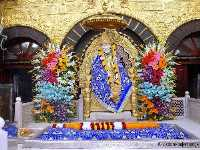
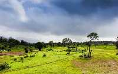
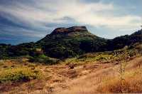
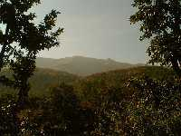
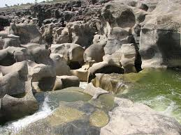

Padavleni caves

| place | Distance | Famous For | Image |
|---|---|---|---|
| Shirdi | 102km | sai temple |  |
| Ratnawadi | 15km | Ratangad Fort,Amruteshwar temple |  |
| MalshejGhat | 97km | Trekking trails, Waterfalls,Lakes and Historic Forts. |  |
| Igatpuri | 45km | Myanmar Gate, Dhamma Giri,Waterfalls |  |
| NASIK | 74km | Ramkund,Trimbakeshwar temple,Kalaram temple, Padavleni caves |
|
| Nighoj | 122km | Potholes |  |